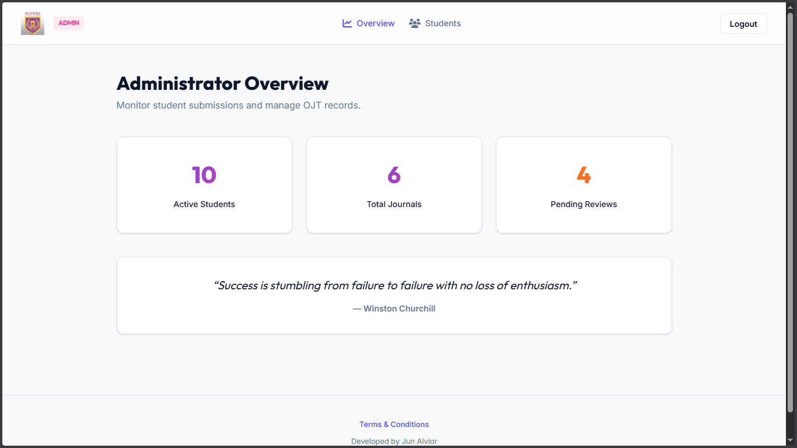

Academic Compliance & Audit Portal (OJT Daily Journal)
Bridging Administrative Efficiency and Modern Intern Tracking with a Zero-Cost Serverless Architecture
Executive Summary
The OJT Daily Journal System is a highly responsive, secure web application designed to digitize the administrative tracking of On-the-Job Training (OJT) student interns. Developed for educational institutions, it replaces traditional, error-prone, manual record-keeping workflows with an automated, role-based platform.
By strategically leveraging GitHub Pages for frontend hosting, Firebase (Auth & Firestore) for database management, and a smart, zero-cost native local email routing engine (mailto:), the platform achieves a 100% free hosting and operations model while delivering high-speed, real-time database transactions, bulk reminder workflows, and premium interactive aesthetics.
The Manual Nightmare
- • Mano-Mano Audits: Coordinators manually compute students' daily activities and verify if weekly hour targets are hit.
- • Delayed Visibility: Real-time compliance monitoring is non-existent; falling behind is noticed weeks too late.
- • Communication Chaos: Drafting student reminder emails involves repetitive copy-pasting of missed schedules.
- • Severe Budget Limits: Zero funds available for server costs, database plans, or third-party transactional email integrations.
The Digital Solution
- • Automated Audits: The database automates calculations of weeks, daily limits, and compliant hours.
- • Instant Dashboards: Administrators filter and view progress and status badges instantaneously.
- • 1-Click Email Engine: A smart client-side reminder system builds custom pre-formatted emails in 1-click.
- • 100% Free Ecosystem: Hosted completely serverless on GitHub Pages and Firebase within free caps.
Interactive System Architecture
OJT Student
Logs learning records, tracks weekly compliance on mobile or desktop.
Firebase Cloud Platform
Real-time user authentication and highly optimized Firestore document indexes.
OJT Coordinator
Monitors interns, inspects statuses, and launches native reminder emails.
Core Architecture Pillars
1. Zero-Cost Infrastructure & High Scalability
To fulfill the strict requirement of **zero operational and hosting cost**, the platform utilizes a serverless Jamstack architecture:
- Frontend Hosting (GitHub Pages): The entire static frontend (HTML5, Vanilla CSS3, ES6+ Modules) is hosted on GitHub Pages. This provides global CDN speeds, high availability, custom domain readiness, and automated deployments directly from the Git repository—completely free of charge.
- Database & Auth (Firebase Free Tier): Using Firebase Auth for secure credentials and Cloud Firestore for document storage ensures the system runs in real-time, scales to hundreds of students, and operates entirely within Firebase’s generous free tier.
2. High-Fidelity Responsive Design & Premium UX
Students submit journals on-the-go (frequently via mobile phones at their training sites), while administrators monitor records on desktops.
- Designed with a modern, glassmorphism-inspired interface using refined CSS variables.
- Micro-animations and responsive flexbox/grid layouts ensure a visual flow that fits any screen size.
- Harmonized color palettes replace browser defaults to give the system an extremely premium, production-ready aesthetic.
3. Smart, Zero-Cost Email Reminder Engine
Coordinators need a way to remind students who have missing entries without the system incurring operational costs. Typical solutions require expensive external APIs (e.g., SendGrid, Amazon SES) which require recurring payment plans and complex backend code.
The Innovative Solution: Personalized Client-Side Routing
The OJT Daily Journal System implements a Personalized Native mailto: Quick-Reminder workflow:
- The system dynamically tracks missing journals by analyzing the student's OJT start date and work schedule against their Firestore submissions.
- In the Admin Dashboard, the coordinator sees a badge displaying the exact number of missing journals for each student.
- Clicking the Quick-Reminder (Envelope Icon) automatically triggers a client-side helper that compiles a professional, pre-formatted email draft.
- The draft lists the student's name, their section, and the exact calendar dates they missed.
- It instantly opens the coordinator's native email client (e.g., Microsoft Outlook, Apple Mail, Gmail) pre-populated with the recipient, subject line, and body.
Outcome: Zero setup time, zero security risks, and zero operational cost.
Database & Schema Design
The backend uses a clean, relational-like document structure in Firestore to connect students with their logs efficiently:
users (Collection)
Document ID: Auth UID- role "student" | "admin"
- email string
- firstName / lastName string
- studentId / section string (Optional)
- company / position string (Optional)
- isActive boolean
- createdAt timestamp
journals (Collection)
Composite: userId_date- userId [FK] string (Ref users.uid)
- date string (YYYY-MM-DD)
- week number
- content string
- submitted / reviewed boolean
- remarks string
- timestamp / updatedAt timestamp
Key Mapping & Performance Optimization
- User Document ID: Bound directly to the Firebase Authentication
uidfor secure, lightning-fast rules and index lookups. - Journal Document ID: Set as a composite key of
{userId}_{date}(e.g.,ltfU9DKVUaF5PuBQm0Mx_2026-02-13). This completely prevents duplicate daily entries at the database level and allows instantaneous retrieval without performing full-collection scans.
Business Logic: Weekly Compliance Tracking
Rather than requiring manual sorting, the system automatically classifies journal submissions by OJT week (calculated dynamically on submission) and displays weekly compliance metrics:
| Submission Volume (Per Week) | Calculated Compliance Status | Visual Badge |
|---|---|---|
| 5 to 7 Daily Journals | Passed | Passed |
| 1 to 4 Daily Journals | Incomplete | Incomplete |
| 0 Daily Journals | No Submission | No Submission |
* Note: Administrators can instantly filter the entire student list by academic section, company, or submission status, immediately identifying which students require guidance.
Key Benefits & Tangible Outcomes
Elimination of Bottlenecks
The OJT Coordinator no longer does manual audits. The system handles all schedule math and displays live status indicators.
100% Free Lifecycle Cost
The application runs entirely on free tier services (GitHub Pages and Firebase) with no risk of unexpected bills or subscription locks.
No Setup Complexity
The mailto-based email launcher operates entirely on the client side, bypassing complex server setups, domain SPF/DKIM verification, and security vulnerabilities.
Enhanced Engagement
With a mobile-responsive interface and a clean workspace, students can log their daily learnings in under two minutes directly from their phones.